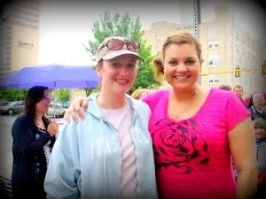

Last month, a book I co-authored, “Redeemed by Grace,” launched, and we were thrilled to see the story finally come to light. The title alone invites. Who doesn’t want to read a story about a life changed, a soul redeemed by God?
But the subtitle has produced different responses.
“This is interesting,” a friend said after I gave her a signed copy. She was pointing to the subtitle. I understood. Because while the story is a conversion story at its root, that conversion happened within the walls of the nation’s largest abortion provider. And many are convinced Planned Parenthood exists solely to help women.
Our subtitle hints at a much different reality: “A Catholic Woman’s Journey to Planned Parenthood and Back.” There it is, the raw truth of it, and definitely a piece of her story Ramona Trevino, the author, felt compelled to reveal, for reasons you’ll soon read, I hope.
And yet some will never have a chance to know the truth. While the reaction to our book has been very favorable so far, at least one very dear person in my life won’t crack the cover. It’s a little confounding to me. There are so many beautiful revelations in the story. But maybe it’s just easier not knowing the truth.
It’s interesting to me, being where I’m at now, to look back on my own past affiliations with Planned Parenthood. When I wrote this post in June 2011 about having met Abby Johnson, another former Planned Parenthood manager who had recently published her breakthrough book, “Unplanned,” the comments hinted at confusion over what Planned Parenthood really is.
{kind=link}

“Alright, Planned Parenthood is really confusing. Right now, the buzz is that many clinics are closing,” one friend commented. “They say it’s sad because women won’t have the support services they need. That PP provides health care, consultation, and contraceptives. They were on the news last night and specifically said they don’t fund abortions. So, I’m confused. Are we being deceived? and, why?”
Ramona was among those who feels deceived, and, having felt the torment of handing out abortion referrals to many of her former clients, knowing their child’s life likely would end that day, she wants others to know the truth. Abby Johnson is another who felt she’d been lied to about Planned Parenthood’s true intent.
But among the many who have felt deceived by Planned Parenthood, there is another, quieter voice: my own.
You see, I also have a story that hints at Planned Parenthood’s untruthful demeanor, and though it’s not likely to be full-length-book worthy, it’s still a story, and perhaps it matches the experiences of others who have found themselves walking into a Planned Parenthood facility like I did back in the mid-1990s,
I was young and married to a non-Catholic. Though I’d heard the Church’s beautiful teaching on life-giving love, and Natural Family Planning, I was scared. I didn’t think my husband would buy it, and I didn’t have the courage to push the issue. Contraception was so mainstream that I just didn’t think I could win that fight. And I wasn’t even convinced yet I wanted to.
But a few years into our marriage, I began falling in love with my Catholic faith in a new way. I realized I’d missed so much about what the Church really teaches, and I was thirsty to learn the truth; not as it is portrayed by the world, but from the horse’s mouth. I ended up being introduced to Kimberly Hahn’s “Life-giving Love,” and being blown away. It was so beautiful! And…so counter-cultural. And yet, I was tired of living in the gray. I wanted to embrace all of Catholicism, or none of it. I couldn’t turn away so I chose to dive into the deep.
Part of that meant going off the pill, and a yearning to start a family earlier than we’d originally planned. But what about the conception troubles some of the women in my extended family had faced? What if I couldn’t have kids?
I think back to that time now and I’m a bit red-faced about it, but how would I have known? Planned Parenthood; the place where I went to get my pill supply refilled. The name said it all, right? They existed to help us plan our family. And finally, we were ready to move forward.
“My husband and I are ready to have a child,” I told the Planned Parenthood worker during my routine consultation. “But I’m worried I won’t be able to conceive. Do you have any tips on how to increase the chances of pregnancy? I’m already 27 so I really don’t want to wait much longer.”
I remember her response was one of, well, she seemed a little shocked at my question, as if she didn’t hear it very often. By her physical response, I could tell I’d caught her completely off guard. And that shocked me. Wasn’t this…now wait a minute…I’m confused.
“You know, my daughter is your age, and right now she’s in Australia having the time of her life,” she finally said. “She’s traveling the world, free as a bird. She has the rest of her life to have kids. Are you sure you really want to be strapped down with children right now?”
Was I really hearing this? Why would she be trying to talk me out of planning my family? Isn’t that what Planned Parenthood was for? To help when the time came to grow our families? And it wasn’t like I was a teenager or something. My heavens, I was pushing 30.
After a while of me persisting in my desire to have some information on upping one’s chances of conceiving a child, she retreated to another room, and returned with a dusty, dated sheet that included a few tips on how to increase the chances of conception. I could tell it was a sheet that didn’t come out very often — if ever before that day. “Thanks,” I said.
It wasn’t long after that our first child became a reality. How joy-filled I was to realize that we hadn’t been given the cross of infertility; that we were able to conceive a child. We welcomed that child, and the other five who followed — including one who died in miscarriage — and never looked back.
But I have looked back occasionally to that moment in the Planned Parenthood office when I realized, like others would, that I’d been duped. The clever wording had been a ruse. Planned Parenthood had no intention of helping to plan and grow my family. Instead, they were intent on convincing me that, despite my very real and natural desire to have children as a grown, married woman, that kids are more burden than blessing, and I was crazy to think of denying myself a truly free, unburdened life. If I just kept popping those pills, by golly, I’d have that. And didn’t I want that? Didn’t I want freedom?
We’re not even on the topic of abortion yet. For that is the deeper layer — the most obvious. But there are other layers just as troubling, if not as blatant, like the one revealed to me, and those that were revealed to Ramona during her time employed by the abortion giant.
No, I didn’t experience going through an abortion — thank God — but I’ve known many who have, and have deeply regretted it. Through my own lived experience, and hearing from so many others whose stories have had much more tragic endings, I know that Planned Parenthood deceives on some layers of their operation. And because of that, I can’t trust them on the other layers, either. There’s too much evidence against truth here.
That doesn’t mean that everyone who works there is purposefully deceptive. I believe many are well-intending, just like Ramona and Abby were when they first accepted positions for the organization. But if an organization is built on untruth, everything it produces will have untruth attached to it as well, in one way or another.
Even if you love and embrace what you think Planned Parenthood is, I hope you will consider reading “Redeemed by Grace.” It’s the story of a soul’s journey into, and out of, an organization that has helped in the conception of many; not children but lies. Because truth is so vitally important to me, as a trained journalist and a woman of faith, I’d rather risk my reputation to help reveal truth than put other women and babies in situations that can lead to death and darkness, either of the soul or body.
Ramona and I wanted to tell a beautiful story of redemption, but it necessarily had to include troubling facts about her former employer. I just pray that those who have been led to believe this organization is truly at the service of humanity will be open to another possibility.
Q4U: What has your experience with Planned Parenthood been?